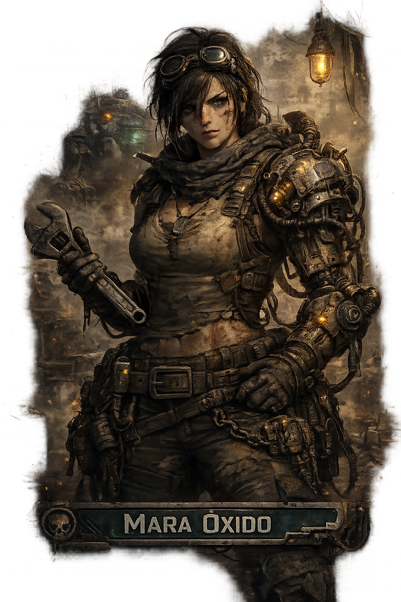

pocobot_mapa_interactivo.html es el terreno de trabajo para estaciones, nodos y progresion visual.
Construccion del modo historia real
Base 01
Base 02
Flujo
Del prototipo oculto al viaje definitivo de PoCoBOT
Vamos a diseñar el modo historia directamente sobre el mapa bueno, usando la biblia como soporte narrativo y esta pagina como mesa de campana. Aqui trabajaremos la ruta, los nodos, los dialogos y el orden de implementacion antes de llevarlo al juego principal.
pocobot_lore_biblia.html fija personajes, tono, localizaciones y el conflicto de Argos.
Desarrollador sirve para consultar y cruzar fuentes. Boceto es donde plantamos el modo historia final.
Consulta las dos bases a la vez
La pestana de desarrollador funciona como banco de referencia: mapa a un lado, biblia al otro, y notas de trabajo para que no perdamos el hilo mientras construimos.
Mapa vivo
Lore operativo
Plantilla del modo historia real
La pestana nueva es la mesa en la que vamos a levantar la campana verdadera. Aun no es la version publica: es el espacio donde la historia empieza a existir de verdad.
Ruta jugable
Capitulos vivos
Entorno de trabajo del Modo Historia
Dejamos el flujo preparado para trabajar aqui dentro sin contaminar la pagina principal. La idea es simple: consultar, decidir, plantar, y luego integrar.
Banco de referencia
Aqui dejamos a la vista los dos documentos base que ya estan dentro del proyecto. Este panel es para estudiar, comparar y fijar criterio antes de tocar las escenas jugables.
Mapa interactivo
Es la capa visual de progresion. Los circulos, el desplazamiento y los hitos del mundo se siguen afinando aqui.
Biblia de lore
Es la capa narrativa. Mantiene alineados personajes, localizaciones, tono, Argos y el sentido del viaje.
Mapa interactivo base
Lo usamos como ruta de campana y terreno de iteracion.
Reglas de trabajo
Asumimos desde ya que esta pagina es el estudio oculto del modo historia, no la version final. Aqui podemos cruzar ideas, iterar nodos y fijar la estructura real antes de exponerla al juego principal.
1. Consultar
Miramos mapa y biblia juntos para no construir capitulos sin mundo ni mundo sin objetivos jugables.
2. Plantar en Boceto
Todo lo que vaya a ser canon jugable pasa a la pestana
Boceto, que es nuestro modo historia real en construccion.
3. Integrar al final
Solo cuando el bloque funcione de verdad lo moveremos a la pagina principal de PoCoBOT.
4. Raiz narrativa oficial
Todo lo que consolidemos para historia debe vivir en
assets/Historia. Esa carpeta pasa a ser el almacen oficial del modo historia.
Biblia de lore base
Documento operativo para tono, personajes y significado de cada estacion.
Este es el terreno donde vamos a plantar la campana definitiva
El mapa queda ya incrustado dentro del area de boceto para que la ruta visual, las estaciones y las misiones se disen en el mismo sitio donde luego construiremos la experiencia real. A partir de aqui, cada nodo que definamos bien se podra convertir en escena jugable.
Abrir Boceto
Portada + titulo + mapa
Ruta activa de campana
Mapa de trabajo para implementar el modo historia paso a paso.
Mesa de direccion
Dejamos tambien un pequeño tablero de intencion para no perder el foco mientras avancemos capitulo a capitulo.
Tesis visual
Un viaje por un corredor postapocaliptico de metal, niebla, energia residual y ruinas con memoria.
Tesis jugable
Cada estacion debe ensenar, tensar o revelar algo. Nada de nodos de relleno.
Tesis narrativa
La ruta empieza como supervivencia y termina descubriendo que todo era una cadena de evaluacion ligada a Argos.
Objetivo
Construir aqui la version buena, y subirla a PoCoBOT principal solo cuando el bloque este realmente terminado.
Raiz oficial del modo historia
/assets/Historia
Usaremos esta ruta como repositorio vivo de mapa, musica, lore, retratos, localizaciones y futuros datos del modo historia. Los materiales de Brutos pasan a alimentar directamente este boceto.
Nucleo de personajes oficiales
Ya he conectado el boceto con los nombres e imagenes oficiales que has dejado en assets/Historia/Brutos, para que trabajemos con la identidad buena del reparto desde el principio.

Protagonista guia
Mara Oxido
Mecanica del arranque de ruta. Es la mano que baja el mecha a tierra, explica el oficio y da el tono tecnico del inicio.

Contacto de frontera
Vera Hex
Abre el mundo exterior, la informacion y la economia de supervivencia. Ideal para estirar el mapa mas alla del taller.

Rival tactico
Corvo Vanta
Representa criterio, presion y duelo serio. Su presencia debe marcar el cambio de entrenamiento a amenaza real.

Figura terminal
Custodio de Argos
Es la cara del examen final y del legado de Argos. Todo el ascenso de la ruta debe empujar hacia esta presencia.
Mara Oxido
Vera Hex
Corvo Vanta
Custodio de Argos
Retazos del mundo que ya tenemos
Estas piezas visuales salen de la carpeta Brutos y nos sirven para que el boceto deje de ser abstracto: ya se ve el tono real de refugio, frontera, amenaza y final de viaje.

Hangar de la Fosa Azul
Punto de arranque: refugio tecnico, nucleo azul y sensacion de oficio superviviente.

Mercado de Relés Muertos
Chatarra, comercio y mundo vivo. Aqui el jugador siente por primera vez la escala del entorno.

Torre de Seguimiento 4B
Infraestructura vieja de Argos. Buen nodo para subir misterio y conectar jugabilidad con observacion.

Campamento de las Placas Rojas
Humanidad, memoria y veterania. Ideal para dar respiracion emocional sin perder tension.

Foso de Viento Negro
Entorno hostil perfecto para defensa activa, emboscada y peligro fisico del terreno.

Exterior de la Cupula Hendida de Argos
El ascenso ya tiene final visual. Aqui se siente que la ruta llega a algo sagrado, roto y peligroso.